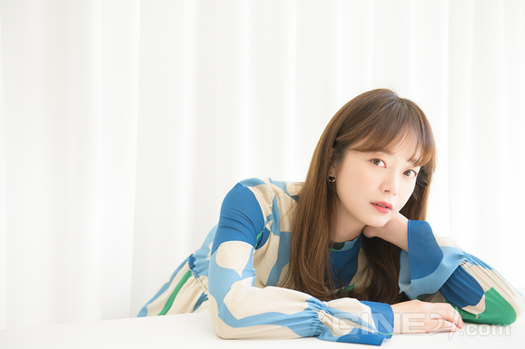

전소민(全昭旻[2], 1986년 4월 7일 ~ )은 대한민국의 배우이다. 2004년에 MBC의 시트콤인 《미라클》을 통해 연기 활동을 시작하였으며, 2006년에 봉만대 감독의 영화 《신데렐라》를 통해 영화계에 입문했다. 이후 2013년에 MBC의 일일연속극인 《오로라 공주》에서 여주인공을 맡았으며, 이 작품으로 MBC 연기대상 여자 신인상을 받는 등 대중들의 주목을 받았다. 다른 전소민의 출연작으로는 《아빠 셋 엄마 하나》, 《동안미녀》, 《끝없는 사랑》 등이 있다.
